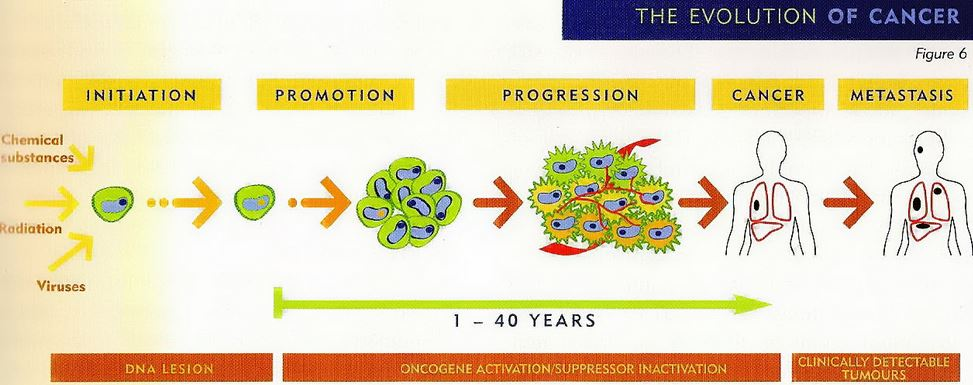

Fisiopatología del cáncer

Según Hernández et al. (2020) la patogenia del cáncer incluye mecanismos genéticos y epigenéticos. Se entiende por epigenética cualquier alteración en la expresión génica, potencialmente hereditaria, que no implica cambios en la secuencia del ADN. Estas modificaciones pueden provocar alteraciones en la transcripción, la activación anormal de ciertos genes, la inestabilidad genética y el silenciamiento de genes implicados en el desarrollo del cáncer.
Este proceso se desarrolla en distintas etapas: iniciación, promoción y progresión, las cuales conducen finalmente a la aparición del cáncer. Durante estas fases, las células sufren cambios que favorecen su crecimiento descontrolado y su capacidad de invadir otros tejidos.
Entre las alteraciones epigenéticas, la metilación del ADN es el principal mecanismo implicado, ya sea por hipometilación global o por hipermetilación localizada en regiones promotoras de genes.